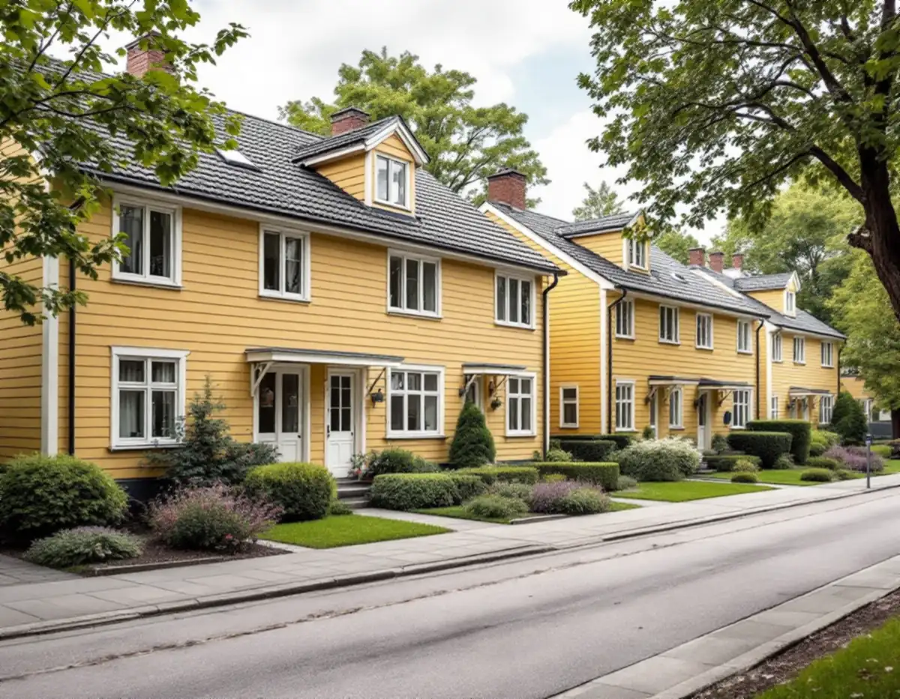
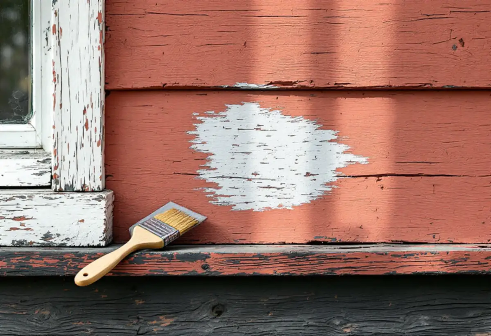
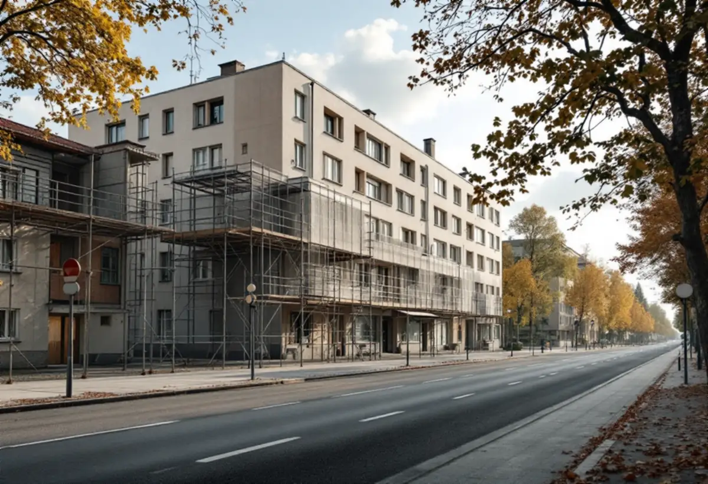

Platsbesök
Fasaderna, färgtypen och vilka sidor som vetter mot gatan går vi igenom.

I Solna ligger nästan alla bostäder i flerbostadshus, så den som ska måla om en fasad är ofta en bostadsrättsförening eller en radhusägare med grannar tätt inpå.
Beskriv jobbet kort.
Något blev fel. Kontrollera uppgifterna eller ring 08 12 410 276.
Vi tittar på jobbet på plats innan du får offert.
Du ser vad som ingår och vad det kostar.
Vi drar av ROT direkt och sköter ansökan.
Geal Entreprenad AB, Bromma. Org.nr 559303-7566.

Geal Entreprenad AB målar fasader på radhus, villor och föreningshus i Solna och börjar med att reda ut vem som beslutar och om den nya kulören kräver lov.
Enligt Solnas översiktsplan finns 99 procent av stadens bostäder i flerbostadshus, och staden konstaterar att den begränsade marken ger små möjligheter att bygga småhus. I stället har staden arbetat för marknära stadsradhus, som när planen skrevs byggdes i Järvastaden och Nya Ulriksdal.
För fasadmålning betyder det två helt olika uppdrag. Det ena är radhuset eller villan, där ägaren själv bestämmer. Det andra är flerbostadshuset, där föreningen eller fastighetsägaren beslutar och där reglerna för lov är strängare.

Översiktsplanen pekar ut sammanhängande kulturmiljöer där helheten bedöms som viktig. Bland dem finns flera med småhus: Råsta egnahem, Bergshamra by, villabebyggelsen i norra Råsunda, Råsunda villastad och Solna kyrkby med radhusbebyggelse. Radhusen i kvarteret Fyrväpplingen är byggnadsminne.
Staden skriver att det i dessa miljöer ofta är helhetsintrycket som är det viktiga, och att det finns områden och byggnader som skyddas genom bestämmelser i detaljplan. Byter du kulör på ett hus i en sådan miljö kan bygglov krävas även för en villa. Solna stad har en karta över kulturhistoriskt klassade byggnader som ger en första bild.
Boverket förklarar att byte av kulör betyder en ändring av färgens nyans, ton eller ljushet, till exempel från rött till vitt. Att måla om i samma kulör som förut kräver normalt inte bygglov eftersom det räknas som underhåll. På ett en- eller tvåbostadshus krävs inget bygglov för ny kulör, utom i särskilt värdefulla områden och byggnader.
För andra byggnader, som flerbostadshus, krävs bygglov inom detaljplan om ändringen sker på en fasad som vetter mot en allmän plats, till exempel en gata eller park. Det räcker att en del av fasaden vetter mot allmän plats, och det är bara den fasaden som prövas.
Solna stad påminner bostadsrättsföreningar om att de är ansvariga även om en leverantör utför arbetet, och råder dem att göra en ordentlig förstudie av vilka krav som gäller. För en fasadmålning betyder det att föreningen behöver veta om kulören ändras, vilken fasad som vetter mot gatan och om huset är klassat.
Vi tar fram ett underlag som styrelsen kan fatta beslut på: fasadernas skick, nuvarande färgtyp och kulör, förslag på kulör och vilka handlingar ett bygglov kräver. Om husen och kulörerna i Solna i övrigt kan du läsa under målare i Solna.
På ett radhus i en länga syns en ny kulör i hela gruppen. Även när inget lov krävs lönar det sig att stämma av med grannarna, och ligger radhuset i en samfällighet eller förening kan det finnas gemensamma beslut om färgsättningen.
Vi skrapar fram äldre färglager på en liten yta för att se vilken färgtyp huset har, och väljer en färg som fungerar på det underlaget. Om puts och fasadmaterial i Solna kan du läsa under fasadrenovering i Solna.
Fasaderna, färgtypen och vilka sidor som vetter mot gatan går vi igenom.
Kulturmiljöer, detaljplan och behov av bygglov kontrolleras.
Varje fasad och moment står för sig, som underlag för beslut.
Tvätt, skrapning och lagning av skadat underlag.
Grundning där det behövs och strykning i rätt färgtyp.
Vi går igenom resultatet och skriver ner kulör och färgtyp.
Skatteverket räknar målning av fasader på ett småhus som rotarbete. I en bostadsrätt gäller avdraget bara arbete inne i bostaden som du ansvarar för enligt stadgarna, och arbete på gemensamma ytor som fasader ger inget rotavdrag.
Avdraget är högst 30 procent av arbetskostnaden, högst 50 000 kronor per person och år och högst 75 000 kronor tillsammans med rutavdrag. Färg, material och resor ger inget avdrag. För arbete som ger avdrag drar Geal det direkt på fakturan.
Fasadens yta och höjd, underlagets skick, färgtyp, ställning och om bygglov behöver sökas. En överblick finns under målare. Efter ett gratis platsbesök får du ett skriftligt kostnadsförslag.
Fasad, fönster och invändig målning.
Målare i Stockholm →Takbyte, takbesiktning och plåtarbeten.
Takläggare i Solna →Råsunda, Stocksundstorp och Råsta.
Takrenovering i Solna →Kulturmiljöerna, kartan och lovet.
Attefallshus i Solna →Ritningar, kontrollplan och slutbesked.
Byggföretag i Solna →Bostadsrätt, stambyte och villor.
Badrumsrenovering i Solna →Putsade villor och krav på material.
Fasadrenovering i Solna →Råsunda, bygglovet och handlingarna.
Fönsterbyte i Solna →Fönster från 1950-talet, kitt och fogar.
Fönsterrenovering i Solna →Bostadsrätter i Råsunda, Hagalund och Huvudsta.
Golvläggare i Solna →Ta fram och slipa trägolvet under mattan.
Golvslipning i Solna →Bostadsrätter, fläktar och Råsundas villor.
Köksrenovering i Solna →Villor, radhus och lägenheter i Solna.
Målare i Solna →Plåt i Solnas kulturmiljöer.
Plåtslagare i Solna →Väggar, dörrar, balkong och radhus.
Snickare i Solna →Gatusidan, gårdssidan och konstruktionen.
Takbyte i Solna →Tapet efter husets ålder och underlag.
Tapetsering i Solna →Kulturmiljöerna och lovet.
Tillbyggnad i Solna →Hela lägenheten, elen inräknad.
Totalrenovering i Solna →Eller ring 08 12 410 276, mån–fre 08–17.
Beskriv jobbet kort.
Något blev fel. Kontrollera uppgifterna eller ring 08 12 410 276.